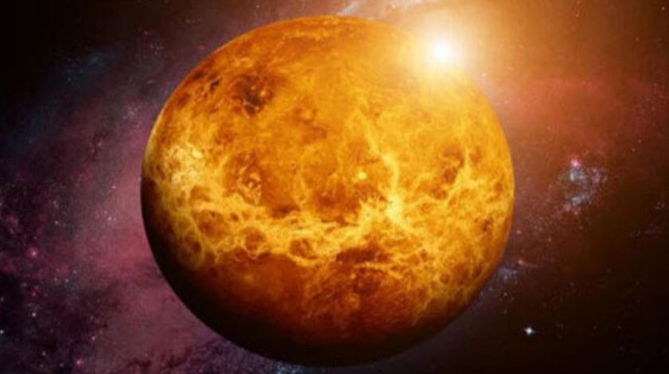

Вене́ра — вторая по удалённости от Солнца и шестая по размеру планета Солнечной системы, наряду с Меркурием, Землёй и Марсом принадлежащая к семейству планет земной группы. Названа в честь древнеримской богини любви Венеры[7]. По ряду характеристик — например, по массе и размерам — Венера считается «сестрой» Земли[8]. Венерианский год составляет 224,7 земных суток. Она имеет самый длинный период вращения вокруг своей оси (около 243 земных суток, в среднем 243,0212 ± 0,00006 сут[9]) среди всех планет Солнечной системы и вращается в направлении, противоположном направлению вращения большинства планет.
Поверхность и внутреннее строение
Исследование поверхности Венеры стало возможным с развитием радиолокационных методов. Наиболее подробную карту составил американский аппарат «Магеллан», заснявший 98 % поверхности планеты. Картографирование выявило на Венере обширные возвышенности. Крупнейшие из них — Земля Иштар и Земля Афродиты, сравнимые по размерам с земными материками. Ударных кратеров на Венере относительно немного. Значительная часть поверхности планеты геологически молода (порядка 500 млн лет). 90 % поверхности планеты покрыто застывшей базальтовой лавой. В 2009 году была опубликована карта южного полушария Венеры, составленная с помощью аппарата «Венера-экспресс». На основе данных этой карты возникли гипотезы о наличии в прошлом на Венере океанов воды и сильной тектонической активности[56]. Предложено несколько моделей внутреннего строения Венеры. Согласно наиболее реалистичной из них, на Венере есть три оболочки. Первая — кора толщиной примерно 16 км. Далее — мантия, силикатная оболочка, простирающаяся на глубину порядка 3300 км до границы с железным ядром, масса которого составляет около четверти всей массы планеты. Поскольку собственное магнитное поле планеты отсутствует, то следует считать, что в железном ядре нет перемещения заряженных частиц — электрического тока, вызывающего магнитное поле, следовательно, движения вещества в ядре не происходит, то есть оно находится в твёрдом состоянии. Плотность в центре планеты достигает 14 г/см³. Подавляющее большинство деталей рельефа Венеры носит женские имена, за исключением высочайшего горного хребта планеты, расположенного на Земле Иштар близ плато Лакшми и названного в честь Джеймса Максвелла.
